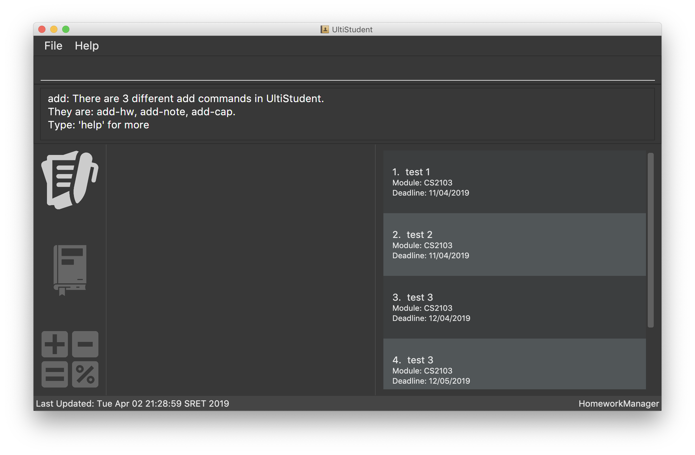

By: Team W09-1 Since: Feb 2019 Licence: MIT
1. Introduction
UltiStudent is a student application that effectively tackles the problem of having too many applications to manage their school life by providing a centralised platform for them to manage their homework, cumulative average point and notes.
UltiStudent is catered for students who prefer to use a desktop app for managing their school activities through a Command Line Interface (CLI) while still having the benefits of a Graphical User Interface (GUI).
Therefore if you can type fast, why not give UltiStudent a try to speed up your management of school activities!
Interested? Jump to the Section 2, “Quick Start” to get started. Enjoy!
2. Quick Start
-
Ensure you have Java version
9or later installed in your Computer. -
Download the latest
UltiStudent.jarhere. -
Copy the file to the folder you want to use as the home folder for your UltiStudent.
-
Double-click the file to start the app. The GUI should appear in a few seconds.
 -
Type the command in the command box and press Enter to execute it.
e.g. typinghelpand pressing Enter will open the help window. -
Some example commands you can try:
-
open HomeworkManager: Opens the Homework Manager and its existing homework -
add-hw mc/CS2103T hw/Tutorial 01 d/05/05/2019: Adds a CS2103T homework “Tutorial 01” with the deadline on 05 May 2019 -
delete-hw 3: deletes the 3rd homework shown in the homework manager -
exit: exits the app
-
-
Refer to Section 3, “Features” for details of each command.
3. Features
UltiStudent consists of 3 key features to help you manage your student life: Homework Manager, Notes Manager, CAP Manager.
3.1. HomeworkManager
Let this handy manager can help you to manage your homework by adding, deleting, editing your homework based on your progress. You can also check on the deadlines of all your homework before deciding which homework to attempt!
3.2. NotesManager
In this manager, you can add, delete, edit and save your notes here. Every note saved here counts toward saving the environment by not using paper! Lets fight against global warming! Fighting!
3.3. CAPManager
This manager will help you to record and keep track of your Cumulative Aggregate Points (CAP)! Simply add, deleting and editing the grades for modules you have taken to see immediately what your updated CAP score is! Not only that, you can even use the CAPManager to project future CAP scores!
This manager will always be your reminder to work hard and get more 'A’s for future modules! At the same time allows you to have an overview of your completed modules which provides you the assistance you need to plan for your upcoming semesters.
4. Commands
As UltiStudent contains many different commands and features, do refer to the command format below to help you better understand how to use each command to their best.
Command Format
-
Words that are marked up, such as
addare commands that you can enter into UltiStudent! -
Words in square brackets, such as
[KEYWORD]are optional. -
Words in UPPER_CASE are the parameters to be supplied by the user
-
In the User Guide, you can expect to see commands such as:
add-hw mc/MODULECODE hw/HOMEWORK d/dd/mm/yyyy.
Here,MODULECODEis a parameter which is can be used asadd-hw mc/CS2103Tbut of course you would have to do the same forHOMEWORKanddd/mm/yyyy. -
All parameters must be supplied by users:
add-hw mc/MODULECODE hw/HOMEWORK d/DEADLINE.
4.1. General Commands
The commands here are applicable in UltiStudent’s 3 Managers: HomeworkManager, NotesManager, CapManager.
The commands differ by the entity placed at the end of each command. add-x, delete-x,
edit-x where x should be replaced by either "hw" for homework, "note" for note,
or "cap" for cumulative average point!
4.1.1. Opening a manager : open
This command will usually be your first and frequently used command in UltiStudent! But fret not, I will teach you on how to use this powerful command that is applicable to all Managers in UltiStudent.
To use this command, we have to adhere to this format: open MANAGER else UltiStudent would not be able to
understand what we are trying to tell it to do.
Example time!
Lets say we have a Homework to add, edit or delete, we can easily use open HomeworkManager to command UltiStudent
to open Homework Manager for us! Same goes for Notes Manager open NotesManager and Cap Manager open CapManager.
With this, we can begin our journey with UltiStudent to become an ultimate student!
4.1.2. Viewing help : help
Format: help
Not sure how to get started? Not to worry! Simply type 'help' for more clarity!
4.1.3. Listing entered commands : history
If you would like to review what you have done in your current session of UltiStudent, simply use our history command!
This command will help to retrieve the previously executed commands which has been entered into the system before history.
4.1.4. Reminder Commands : add edit delete find list
This command will result in a prompt that will remind you of the respective command to enter for each manager.
For example, entering add command will result in a prompt letting you know that add-hw is the add command for
the Homework Manager, add-note for adding notes to Notes Manager and add-cap for the CAP Manager.
4.1.5. Exiting the program : exit
Format: exit
When you are done with using UltiStudent, simply close it by using exit!
All of your entries will be safely stored on our application.
4.1.6. Saving the data
UltiStudent data are saved in the hard disk automatically after any command that changes the data.
There is no need to for you to save manually. It’s easy to use!
4.2. Homework Manager
4.2.1. Adding a homework: add-hw
Format: add-hw mc/MODULECODE hw/HOMEWORK d/DEADLINE
Have a homework but unable to attend to it immediately? No worries! Let Homework Manager help
us keep track of them! By using add-hw, we can command this manager to remember our homework
for us! Make sure we are in the Homework Manager by using open HomeworkManager first.
Sadly, it doesn’t do our homework for us… but hey it reduces our worries on forgetting our homework!
To use this command we have to adhere to this format: add-hw mc/MODULECODE hw/HOMEWORK d/DEADLINE
else Homework Manager would not be able to understand what we are trying to tell it to do.
|
Important
|
DEADLINE must be in dd/mm/yyyy format and DEADLINE should not be a date that is before today! Homework are considered duplicated only if they have the same MODULECODE, HOMEWORK and DEADLINE. |
Okay enough explanation and time for an example!
Lets say we have to do Tutorial 1 for CS1101S by 1st May 2019. We could command this manager to
remember it for us by using add-hw mc/CS1101S hw/Tutorial 1 d/01/05/2019 in the command box (red highlighted box)
and do make sure that you are in the homework manager by checking if the Homework icon is highlighted in the
nagivation bar (white highlighted box) as shown below.

When CS1101S tutorial 1 has been successfully added, the Result Box (green highlighted box) would display
New homework added: CS1101S; Tutorial 1; 01/05/2019;.
We will also be able to view the CS1101S being added into the Module List (blue highlighted box) since this is the first homework for CS1101S we have and the Homework List (orange highlighted box) would show us the newly added CS1101S homework.
|
Tip
|
Pro tip here! The ordering of mc/MODULECODE, hw/HOMEWORK and d/DEADLINE can be jumbled around!
so do not worry that this handy manager will not understand what you are trying to command it to do!
|
|
Caution
|
Sadly Homework Manager is english educated only… Therefore it only accepts english characters and numbers. Maybe Homework Manager would be educated in other languages to accept other characters in future! |
4.2.2. Editing a homework: edit-hw
Format: edit-homework INDEX [mc/MODULECODE] [hw/HOMEWORK] [d/DEADLINE]
Realised that you made a mistake in an entry after you added it? Introducing our edit command!
You can make any changes to any of the attributes of the homework entry using this command!
To use this command, we must follow this format: edit-homework INDEX [mc/MODULECODE] [hw/HOMEWORK]
[d/DEADLINE] You can refer to the diagram below to understand what we mean by the word index!
You may have noticed that it looks rather similar to the add-hw command. Good observation!
However, you should take note of the slight difference that you do not have to include all the attributes.
Instead, only include those you wish to change. Any other attribute(s) is optional.
Now let’s take a look at an example so that you can understand what I mean more clearly.
So you already have a homework entry in the homework manager which has these
mc/CS1101S hw/Tutorial 1 d/01/05/2019 as its attributes.
Now let’s say our professor has decided to extend the deadline by a week upon requests by students.
Simply type edit-hw 1 d/08/05/2019 and the update will be reflected in your homework entry.

After entering your edit-hw command, the message you see in the green highlighted box
in the diagram above indicates that you have successfully done it.
You can also see how the deadline of the attribute has been updated according to the deadline you wish to edit it to.
|
Tip
|
You can edit any amount of attributes at for one homework entry at one time! Include all the attributes you want to alter based on the format and exclude any other attributes you do not want to change. |
4.2.3. Deleting a homework: delete-hw
Format: delete-hw INDEX
Now let’s say you are done with your homework and you wish to remove that entry from the homework manager.
You can easily delete it by using the delete-hw command!
All you have to do is to follow this short and simple format delete-hw INDEX.
Using the same example in the edit command. Let’s say we are done with the CS1101S homework
and wish to remove it from the Homework Manager. All you have to do is to type delete-hw 2 and you are done!
Our delete command is the shortest command in UltiStudent and the easiest to use.
If you happen to forget what we mean by the word INDEX,
simply refer to the diagram in the edit-hw section (Section 4.2.2) to understand what it means!
4.2.4. Finding homework from a specified module: find-mod
Format: find-mod [KEYWORDS]
As we get later into the semester, there will be more work for us to do. Every single module has some form of submission and you will soon have so many entries in your homework list that it makes it difficult to read and find a particular entry. We have a special command for you to use and find all the homework entries belonging to a specific module(s).
The format of this command is simple. find-mod [KEYWORDS].
As you can see from the diagram below, after adding a module code as part of a keyword,
you will be able to see only homework from the module in the homework list.

As you can see from the diagram above, even though there are a total of four modules with homework in the module list,
only homework from the modules CS1101S is shown after the common find-mod CS1101S is used.
|
Tip
|
You are not restricted to only one module code for the [KEYWORDS] in the command.
You can add more of them if you wish.
|
4.2.5. Reverting back to a full list view: list-hw
Format: list-hw
In the previous sub-section, we looked at how we can use the command find-mod to display
homework entries from selected module codes. Now, you are probably wondering now how to display a full list of modules.
To display the full list, simply use this command list-hw. This command has no additional inputs for you to type
and that makes this simple and easy to use!
4.3. Notes Manager
4.3.1. Adding a note : add-note
Imagine yourself sitting in CS2103T Week 7 lecture, and the Professor have just covered an important concept which you would like to take some notes on. Let Notes Manager handle that for you by storing your notes digitally for you!
To use this command we have to follow this format: add-note mc/MODULECODE
n/NOTENAME
First, we will need to be in the Note Manager. To open Notes Manager,
enter open Notes Manager into the Command Box (red). You will see the
Result Box (green) prompting that the Notes Mananger is opened.

In this case, we need to add a new note. We will need to enter the following
command into the Command Box: add-note mc/CS2103T n/Week 7 Lecture.

The new note will be added to the bottom of the list.
|
Caution
|
Notes Manager can only accept alphanumeric characters (A-Z, a-z, 0-9), and note names cannot begin with a whitespace. |
4.3.2. Editing and Saving a note : edit-note save-note
Editing note: edit-note
Format: edit-note
Hurray! We’ve successfully added a note therefore it is time for us to learn how to edit and save the edited notes! But first! we got to make sure we are in the Notes Manager by looking at the Notes icon in the Navigation Box (white highlighted box) as shown below.

Now that we are in the Notes Manager. It is time for us to start editing our note! First off, we have to use
edit-note INDEX to select the notes that we want to edit.
For example, we have 2 notes currently as shown in the image above, and we would like to edit our Personal
Project Portfolio note. We will use edit-note 1 in the Command Box (red highlighted box) to open Personal
Project Portfolio note for editing.
When Notes Manager has successfully open our note, it will display Opened note: 1 in the Result box (green
highlighted box). At the same time, the note will be highlighted in blue in the Notes List (blue highlighted box)
and the Text Field (orange highlighted box) will be activated and turn white, allowing us to start jotting down
our notes!
Saving note: save-note
Format: save-note
Now that we are done editing our note, it is time to save them! We can do this easily by using the save-note in
the Command Box (red highlighted box)!
Once the note is saved, Notes Manager will let us know by displaying Saved note, Module: CS2103T Note: Personal
Project Portfolio Content: …(notes that we wrote) in the Result Box (green highlighted box). At the same time,
the Text Field (orange highlighted box) will be disabled and turn grey.
For save-note there is no parameters as it will save all edited notes in notes manager.
|
Tip
|
Pro tip here! We can edit multiple notes at the same time by using edit-note 1 then edit-note 2 to open the
respective notes to edit. Once we are done editing, we can simply use save-note to save all the edited notes!
|
|
Caution
|
For data integrity, undo and redo commands are not supported on editing and saving notes. Changes must be made manually. |
4.3.3. Deleting a Note: delete-note
Format: delete-note
As the semester comes to an end, we would like to clean up the notes by
removing some of the notes which we no longer need. Here’s where
delete-note comes in handy!
To use this command we have to follow this format: delete-note INDEX. This
will delete the note at the specified index. The index must be a positive
integer (1, 2, 3,…) and it must refer to an existing index number shown in
the displayed Notes List.
Say, we would like to delete the note we added from CS2103T Week 7 Lecture.
It has an index of 12 in the list.
As such, we will need to enter the following command: delete-note 12.

Viola! The note is deleted.
4.3.4. Finding note from a specified word: find-note
As the semester progresses, there will be more notes taken for various module
activities (lectures, tutorials, labs). Wouldn’t it be easier if we can
search for our notes based on a keyword? With find-note, we will be able to
find our notes easily with the usage of keywords!
The format of this command: find-note [KEYWORDS].
Let’s say you are looking for a tutorial note. We will enter find-note
tutorial in the Command Box (red). The resulting list will be displayed in
the Notes List (light blue box).

|
Tip
|
You are not restricted to only one keyword for the [KEYWORDS] in the command.
You can add more of them if you wish.
|
In v2.0, we will be able to search for notes by its module code and note name.
4.3.5. Reverting back to a full list view: list-note
In the previous sub-section, we looked at how we can use the command find-note
to display notes from selected keywords. Now, you are
probably wondering now how to display a full list of modules.
To display the full list, simply use this command list-note. This command has
no additional inputs for you to type and that makes this simple and easy to use!
4.4. CAP Manager
Climbing to your first class honours? Or struggling to keep within your desired class? Worry no more, let CAP Manager help you with keeping count. All you need to do is to key in your grades and TADAH your CAP will be calculated for you. CAP Manager’s interface is split into a few key sections. Do refer to the image below to familiarise yourself with Cap Manager!
Now that you’re all set, let’s see how Cap Manager can help us!
4.4.1. Adding a CAP entry: add-cap
Format: add-cap mc/MODULECODE g/MODULEGRADE mcs/MODULECREDITS sem/MODULESEMESTER
Let’s assume it’s the end of the semester and you just got your grades back.
Simply add your modules to the Cap Manager with the add-cap command to view your updated CAP!
| Parameter | Input type | Example |
|---|---|---|
mc/MODULECODE |
Module Code of the Module |
mc/CS2103T |
g/MODULEGRADE |
Module Grade received |
g/A |
mcs/MODULECREDITS |
Number of Modular Credits the module is worth |
mcs/4 |
sem/MODULESEMESTER |
The Semester the module was taken in |
sem/Y1S1 |
Examples:
Let’s assume you would like to add the module, CS2101 into the CAP Manager. Given that you got B+, and that CS2101 is worth 4 Modular credits and you took the module in Year 2 Semester 2, the command to input to the Command Box would be:
-
add-cap mc/CS2101 g/B+ mcs/4 sem/Y2S2
Before adding
After entering add-cap mc/CS2101 g/B+ mcs/4 sem/Y2S2 into the command box.
And just like that your CAP Manager will now include the module you just added! Your CAP score will also be updated right away! In addition, the semester list will also be updated if you are adding a module that is newly taken.
-
Unfortunately, UltiStudent’s CAP Manager does not allows U or S grade as of this version. Do look out for our next update, where we add the SU Command!
-
Currently, CAP Manager does not allow duplicate modules. Do use our
edit-capcommand to make changes to your grades for the case of retaking a module.
4.4.2. Editing a CAP Entry by index: edit-cap
Format: edit-cap INDEX [mc/MODULECODE] [g/MODULEGRADE] [mcs/MODULECREDITS] [sem/MODULESEMESTER]
If you made a mistake in entering the information for any particular CAP entry, do not worry!
edit-cap command can easily fix that.
Examples:
Let’s assume you had actually gotten A+ for the module CS2101 and you took the module in Y3S1 instead.
Given this scenario, the command to input to the Command Box would be:
-
edit-cap 15 g/A sem/y3s1
Let’s put it to use!
Before editing:
After editing:
Just like that, all changes you have made will be reflected straightaway in the CAP manager. This of course includes the module list, semester list and your CAP score!
-
Do note that the index entered into the command must be a positive integer 1, 2, 3, … up to the number of modules in the CAP Manager. In addition, do take note that at least one of the optional fields has to be provided.
4.4.3. Editing a CAP Entry by module code: edit-cap-mc
Format: edit-cap-mc MODULECODE [mc/MODULECODE] [g/MODULEGRADE] [mcs/MODULECREDITS] [sem/MODULESEMESTER]
UltiStudent understands the large amount of modules students have to take as such, to bring more convenience, CAP Manager now allows you to edit the parameters of any modules through their module code instead of the index number for more convenience!
The format for the edit-cap-mc command is edit-cap-mc MODULECODE [mc/MODULECODE] [g/MODULEGRADE] [mcs/MODULECREDITS] [sem/MODULESEMESTER]
Just like the edit-cap command, edit-cap-mc has the same
4.4.4. Deleting a CAP entry: delete-cap
Format: delete-cap INDEX
If you ever do need to delete a module in the CAP Manager, you may use this command to easily delete
that module.
The format for this command is that of delete-cap INDEX.
Examples: For example, if you would like to delete the module ST2334 from CAP Manager, simply look for its index number. and apply it to the format! In this case, we would enter:
-
delete-cap 14
Before deleting: image::EditedCapManager.png[width="790"]
After entering the delete command:

With that the module has been deleted. Once again, your CAP will be updated rightaway in the CAP Indicator!
4.4.5. Filtering a CAP entry: find-sem
Format: find-sem MODULESEMESTER …
Here at UltiStudent, we understand that students have many modules and it can become difficult to find and filter
through the many modules that they take. To help you with this, the find-sem will be handy!
Let’s say you would like to view all the modules that you took in Year 1 Semester 2.
Simply type find-sem Y1S2 into the Command Box and the module list will be updated rightaway to show the modules ou took in the
semester you entered!
|
Tip
|
Psst..! You can use the find-sem command to view more than 1 semester of modules if you wish! |
|
Caution
|
Do be careful and know that your CAP reflected in CAP indicator is still for that of all your modules. CAP indicator does not calculate your CAP score for only the displayed modules! |
4.4.6. Filtering a CAP entry: list-cap
Format: list-cap
In the previous sub-section, we saw how using the find-sem command can help us to filter through the entire CAP
Manager and only see the modules of the semesters we are interested in. Now let’s see how we can view all of our modules again!
The list-cap command will help you to view your full list of modules in the CAP Manager.
All you have to do is enter list-cap into the command box and you will see all the modules you have taken.
5. Future Releases
5.1. General Commands
5.1.1. Undoing previous command : undo
Accidentally made any mistake by entering a command with unintended effects? Don’t worry!
Simply type undo and you will undo your latest changes in any of our managers.
Format: undo
|
Note
|
Undoable commands: those commands that modify the UltiStudent’s content in
the various manager e.g. for Homework Manager
( |
Examples:
-
delete-hw 1
undo(reverses thedelete-hw 1command) -
delete-note 1
undo(reverses thedelete-note 1command) -
delete-hw 1
add mc/CS2101 hw/Tutorial 1 d/03/03/2019
undo(reverses theaddcommand)
undo(reverses thedelete-hw 1command)
5.1.2. Redoing the previously undone command : redo
Made an extra undo by mistake? Fear not! You can simply revert any of your undos by using our redo command.
Format: redo
Examples:
-
delete-hw 1
undo(reverses thedelete-hw 1command)
redo(reapplies thedelete-hw 1command) -
delete-note 1
redo
Theredocommand fails as there are noundocommands executed previously.
6. FAQ
Q: How do I transfer my data to another Computer?
A: Install the app in the other computer and overwrite the empty data file it creates with the file that contains the data of your previous UltiStudent folder.
7. Command Summary
7.1. General
-
Open :
open MANAGER
e.g.open HomeworkManager,open NotesManager,open CapManager -
Find :
find KEYWORD [MORE_KEYWORDS]
e.g.find Tutorial 3 -
Help :
help -
History :
history
7.2. Homework Manager
-
Add Homework :
add-hw mc/MODULECODE hw/HOMEWORK d/DEADLINE
e.g.add-hw mc/CS1101S hw/Tutorial 1 d/01/05/2019 -
Delete Homework :
delete INDEX
e.g.delete 2 -
Edit Homework :
edit-note INDEX [mc/MODULECODE] [hw/HOMEWORK] [d/DEADLINE] [p/PRIORITY]…
e.g.edit 2 d/030319 p/
7.3. Notes Manager
-
Add Note :
add-note mc/MODULECODE n/NOTENAME hw/HOMEWORK [p/PRIORITY]…
e.g.add-note mc/CS2103T n/Lecture 3 -
Delete Note :
delete-note INDEX
e.g.delete 2 -
Editing Note to Edit :
edit-note INDEX
e.g.edit-note 1 -
Saving an Edited Note :
save-note
e.g.save-note
7.4. Cap Manager
-
Add Cap Entry
add-cap mc/MODULECODE g/MODULEGRADE mcs/MODULECREDITS sem/MODULESEMESTER
e.g. `add-cap mc/CS2101 g/A- mcs/4 sem/Y2S2 ` -
Delete Cap Entry :
delete-cap INDEX
e.g.delete-cap 1 -
Edit Cap Entry by Index :
edit-cap INDEX [mc/MODULECODE] [g/MODULEGRADE] [mcs/MODULECREDITS] [sem/MODULESEMESTER]
e.g.edit-cap 2 g/B+ mcs/4 -
Edit Cap Entry by Code :
edit-cap MODULECODE [mc/MODULECODE] [g/MODULEGRADE] [mcs/MODULECREDITS] [sem/MODULESEMESTER]
e.g.edit-cap-mc CS3203 g/A- mcs/8 -
Find Cap Entry by Semester :
find-sem MODULESEMESTER
e.g.find-sem Y2S2 Y3S1 -
List all Modules in the CAP Manager :
list-cap
e.g.list-cap